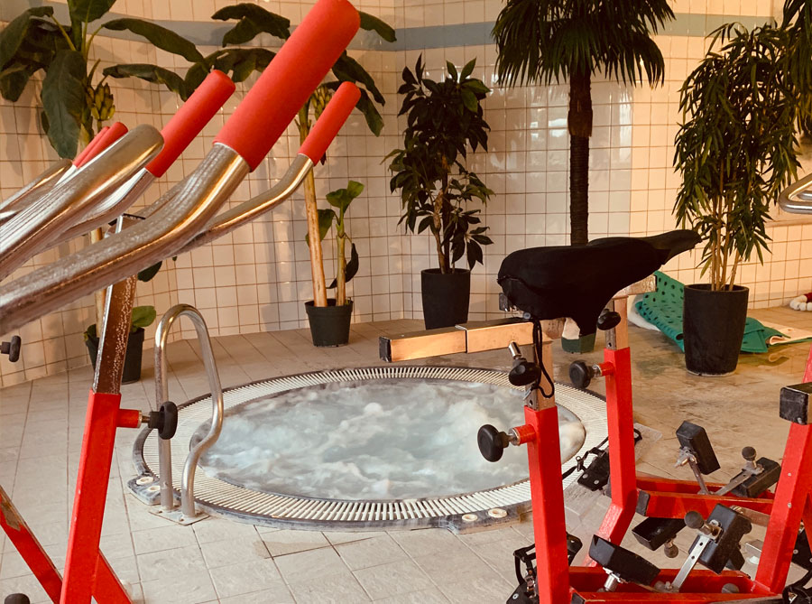

Body Tempo vous accueille dans un espace de 1600m2, où vous pourrez découvrir librement et de façon illimitée les espaces musculation, cardio training, bien être et aquatique.

Body Tempo, c'est plus d'une cinquantaine de cours collectifs par semaine (parrainés par les incontournables LesMills) et un accès aux espaces de travail individuel.
Afin de respecter nos engagements, nous mettons toute notre énergie et notre passion pour satisfaire nos clients. Body Tempo c'est permettre à des sportifs ou non sportifs de pratiquer des activités de remise en forme avec un encadrement de qualité. Le challenge physique est le moteur de nos programmes, c'est ce qui nous rend différent et permet à nos clients de progresser.
Body Tempo c'est donner à ses clients les moyens d'atteindre et dépasser leurs objectifs et de leur faire découvrir les plaisirs et les bénéfices d'une pratique sportive régulière.